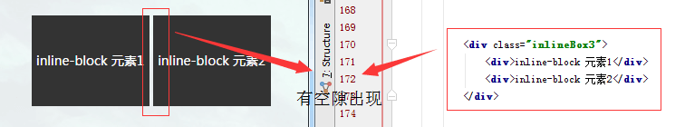
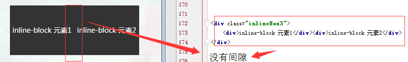
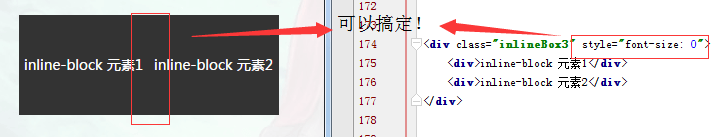

一直想要丰富自己的布局技巧，然后就看到了使用 inline-block 布局的方法，最近也在实际项目中进行了试用，感觉挺不错的 所以想要写篇文章记录下来。参考链接： 拜拜了,浮动布局-基于display:inline-block的列表布局
浮动(float) 布局
可能很多前端最开始使用的布局就是浮动布局，所以这里就不多讲，但包裹浮动的父元素一般都要进行清除浮动的操作 不然就会造成浮动塌陷，但当在对浮动元素不设置固定高度时，浮动的元素会出现错位的现象
inline-block 布局
这里的inline-block 布局就能很好的解决这个问题，下一行会以上一行最高高度为基准
这里要提下兼容性的问题，IE6/7不支持 display:inline-block 属性，对于IE8+以及现代浏览器可以直接使用， 如果你非要兼容IE6/7的浏览器可以参考下开头的参考链接，张鑫旭大大的文章里有很好的说出解决办法。
这里重点要指出的是inline-block会存在的间隙问题，这一般是因为我们在写代码时为了美观一般会进行换行 ，而对行级元素来说，一个换行就相当于一个空格
 但为了代码可读性和美观性我们是不可能直接一行写完所有代码的，所以必须的找其他的办法，空格符本质上就是个字符 所以用font-size:0;就能很好的解决这个问题。（ps：这个方法也会出现浏览器兼容问题，但那时比较老的版本了， 张鑫旭大大的文章里有写，可以看下）
inline-block 的巧用
在参考文章中有提及过的，采用了 inline-block 布局后可以采用很多方便的属性，像 white-space:nowrap; (不换行)属性， 这个好处在于可以不用去计算排列的元素它们的总宽度（以前做轮播包裹浮动元素的父元素就要去计算总宽度，不过后来有 方法解决了，不过整体来说还是这个方法更好用）
在不计算元素(行/块级都可以)宽高度的情况下使元素垂直居中(该方法兼容ie7/8)：
这是一个不知宽高的行/块级元素